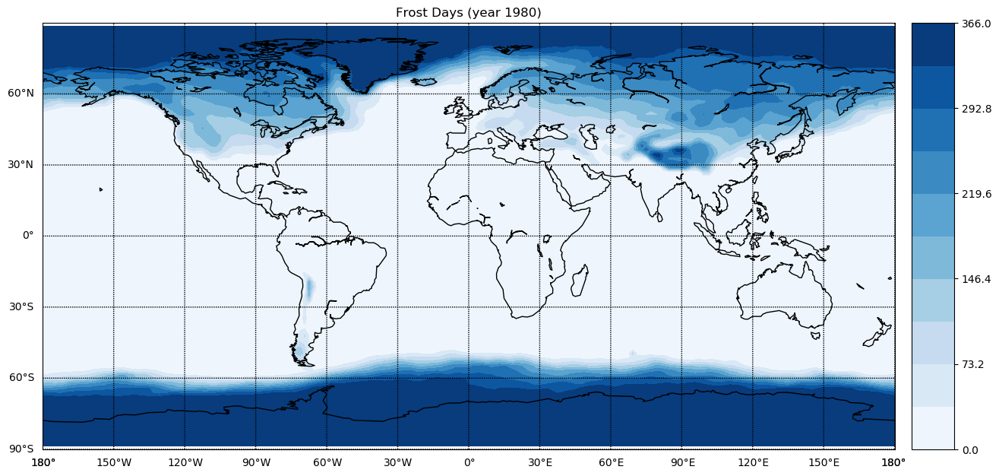

Compute the Frost Days Climate Index¶
This notebook computes the Frost Days index: starting from the daily minimum temperature (1980-1990) TN, the Frost Days index is the number of days where \(TN < 0°\)
As first step, let’s connect to the remote ECAS instance
[1]:
from PyOphidia import cube
cube.Cube.setclient(read_env=True)
Current cdd is /home/ecasuser
Current session is https://ophidialab.cmcc.it/ophidia/sessions/28428206836738622831574257875438385/experiment
Current cwd is /
The last produced cube is https://ophidialab.cmcc.it/ophidia/5976/848585
Import input NetCDF data set (with minimum temperature in °K)
[2]:
mintemp = cube.Cube(src_path='/public/data/ecas_training/E63_kp40_198001_199012_T2m_daymin_merged.nc',
measure='temp2',
import_metadata='yes',
imp_dim='time',
imp_concept_level='d', vocabulary='CF',hierarchy='oph_base|oph_base|oph_time',
ncores=4,
description='Min Temps'
)
New cube is https://ophidialab.cmcc.it/ophidia/5977/848586
Identify the frost days: \(\{day \mid TN(day) < 273.15\}\) with apply (we are basically creating a mask)
[3]:
frostdays = mintemp.apply(
query="oph_predicate('OPH_FLOAT','OPH_INT',measure,'x-273.15','<0','1','0')"
)
Count the number of yearly frost days
[4]:
count = frostdays.reduce2(
operation='sum',
dim='time',
concept_level='y',
)
Subset on the first year
[5]:
firstyear = count.subset(subset_filter=1, subset_dims='time')
firstyear.info()
Datacube Information
--------------------
+=============================================+==================+======+===========+====+==================+==========+
| PID | CREATION DATE | MEAS | MEASURE T | LE | NUMBER OF FRAGME | SOURCE F |
| | | URE | YPE | VE | NTS | ILE |
| | | | | L | | |
+=============================================+==================+======+===========+====+==================+==========+
| https://ophidialab.cmcc.it/ophidia/5977/848 | 2020-04-28 11:53 | temp | INT | 3 | 96 | |
| 589 | :31 | 2 | | | | |
+=============================================+==================+======+===========+====+==================+==========+
Datacube Additional Information
-------------------------------
+==========+==========+===================+==============+=============+=========+=========+===+=================+
| DESCRIPT | HOST x C | FRAGMENTS x DATAB | ROWS x FRAGM | ELEMENTS x | COMPRES | CUBE SI | U | NUMBER OF ELEME |
| ION | UBE | ASE | ENT | ROW | SED | ZE | N | NTS |
| | | | | | | | I | |
| | | | | | | | T | |
| | | | | | | | | |
+==========+==========+===================+==============+=============+=========+=========+===+=================+
| | 5 | 20 | 192 | 1 | no | 456.000 | K | 18432 |
| | | | | | | 000 | B | |
+==========+==========+===================+==============+=============+=========+=========+===+=================+
Dimension Information
---------------------
+======+========+======+===========+===============+=======+=======+==============+
| NAME | TYPE | SIZE | HIERARCHY | CONCEPT LEVEL | ARRAY | LEVEL | LATTICE NAME |
| | | | | | | | |
+======+========+======+===========+===============+=======+=======+==============+
| lat | double | 96 | oph_base | cell | no | 1 | |
|------|--------|------|-----------|---------------|-------|-------|--------------|
| lon | double | 192 | oph_base | cell | no | 2 | |
|------|--------|------|-----------|---------------|-------|-------|--------------|
| time | double | 1 | oph_time | year | yes | 1 | |
+======+========+======+===========+===============+=======+=======+==============+
Execution time: 0.18 seconds
Plot the indicator on a map
[6]:
%matplotlib inline
import warnings
warnings.filterwarnings('ignore')
import matplotlib.pyplot as plt
from mpl_toolkits.basemap import Basemap, cm, addcyclic, shiftgrid
import numpy as np
data = firstyear.export_array(show_time='yes')
lat = data['dimension'][0]['values'][:]
lon = data['dimension'][1]['values'][:]
var = data['measure'][0]['values'][:]
var = np.reshape(var, (len(lat), len(lon)))
fig = plt.figure(figsize=(15, 15), dpi=100)
ax = fig.add_axes([0.1,0.1,0.8,0.8])
map = Basemap(projection='cyl',llcrnrlat=-90,urcrnrlat=90, llcrnrlon=-180,urcrnrlon=180, lon_0=0, resolution='c')
map.drawcoastlines()
map.drawparallels(np.arange( -90, 90,30),labels=[1,0,0,0])
map.drawmeridians(np.arange(-180,180,30),labels=[0,0,0,1])
var_cyclic, lon_cyclic = addcyclic(var, lon)
var_cyclic, lon_cyclic = shiftgrid(180., var_cyclic, lon_cyclic, start=False)
x, y = map(*np.meshgrid(lon_cyclic,lat))
levStep = (np.max(var)-np.min(var))/10
clevs = np.arange(np.min(var),np.max(var)+levStep,levStep)
cnplot = map.contourf(x,y,var_cyclic,clevs,cmap=plt.cm.Blues)
cbar = map.colorbar(cnplot,location='right')
plt.title('Frost Days (year 1980)')
plt.show()

To clear your workspace before running other notebooks
[7]:
cube.Cube.deletecontainer(container='E63_kp40_198001_199012_T2m_daymin_merged.nc', force='yes')